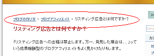
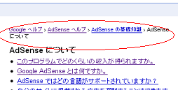
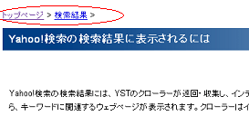

パンくずリストの作り方
Seesaa blog でのパンくずリストの作り方ですが、ウェブ標準な作り方がわからなかったんで W3C をのぞいてきました。
W3C ではこんな感じで作られているようです。

どうやらパンくずリストごと h1 タイトルでくくっているようなんですが、どういった作り方がSEO対策的に一番いいのかっていうのをパンくずリスト比較しようと思います。
ちなみに、パンくずリストっていうのは、ブログ訪問者さまが迷わないようにするためのナビゲーションリンクのことです。
ヘンゼルとグレーテルみたいに、森で迷っても大丈夫なように、パンくずを残して道しるべにするものです。
パンくずリストの作り方を比較
シーサーブログのデフォルトでのパンくずリストは、確かこんな感じになっています。
<< 前の記事 | TOP | 次の記事 >>
でも、一般的なパンくずリストだとこんな感じのが多いです。
TOP > カテゴリ > 個別記事
この場合、「カテゴリー」ごとにフォルダ分けもされているものが多いです。
でも、無料ブログでは自由にフォルダを作成することはできないので、たいていは「エントリー記事」や「過去ログ」ごとにフォルダ分けがされているはずです。
どちらがいいのかは正直わかりませんが、とりあえずこんな感じでこのブログでもパンくずリストを作ってみました。

ただ、最初の方にキーワードが密集してしまうので、はたしてSEO的にこれでいいものだろうか？という気もしてしまいます。
そこで、ヤフーヘルプとグーグルヘルプを参照してみたのですが、どうやらこんな感じになっているようなんです。
グーグルヘルプのパンくずリスト

ヤフーヘルプのパンくずリスト

結局のところ、ページ上部でキーワードが重複されると、くどいような気もするんで、最終的には現在ご覧になっているページで表示されているパンくずリストを作成してみました。
グーグルのようにパンくずリストのアンカーテキストにキーワードをいれつつも、ヤフーみたいにタイトルと重複しないような形で作成してみた次第です。
html ソースの例はこんな感じですが、シーサーブログでは個別ページやカテゴリページなどでの場合わけをしながら作成するといいかと思います。
スタイルシート的には、文字サイズちいさめでアンダーラインをつけておくとわかりやすいです。
シーサーブログでの作り方の例）
html の部分
<div class="breadcrumb"><a href="<% blog.page_url %>">ブログタイトル</a> > <% if:style.disp_category %><a href="<% article_category.page_url %>"><% article_category.name %></a><% /if %> ></div>
css の部分
.breadcrumb {
line-height:120%;
padding:0px 0px 10px 0px;
}
.breadcrumb a{
font-size:12px;
font-weight:normal;
color: #003366;
text-decoration:underline;
}
ちなみに、breadcrumb の部分は任意の英数小文字で、> の記号は html 上に記入する場合は、> と書いた方がいいかと思います。
シーサーのデフォルトで表示されている前の記事、次の記事表示はこのブログでは記事下の一番下に持っていくことにしました。
- ナビゲーションでブログカスタマイズ
今日のブログカスタマイズは、ナビゲーションバーのところをいじってみました。ブログ記事もけっこうたまってきたんで、ヤフーみたいな感じにナビゲーションバーを作成してみたいと思います。 - カテゴリページのナビをブログカスタマイズ
この前は最新の記事欄をブログカスタマイズして、おとといは過去ログページもブログカスタマイズしたんで、今日はカテゴリページをいじってみようと思います。 前回までのブログカスタマイズ 最近の記事欄をブログ... - ブログ階層の作り方
ブログ階層にも深さが必要だと思うんですけど、それにはきちんとしたフォルダ分けをする必要があるかと思うんです。でも、無料ブログサービスの場合、カテゴリごとのフォルダわけができなかったりもしたりです、、そ...